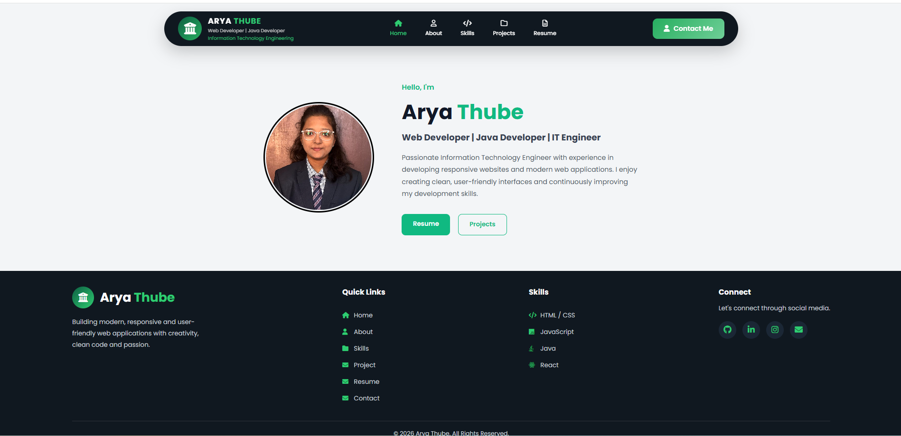
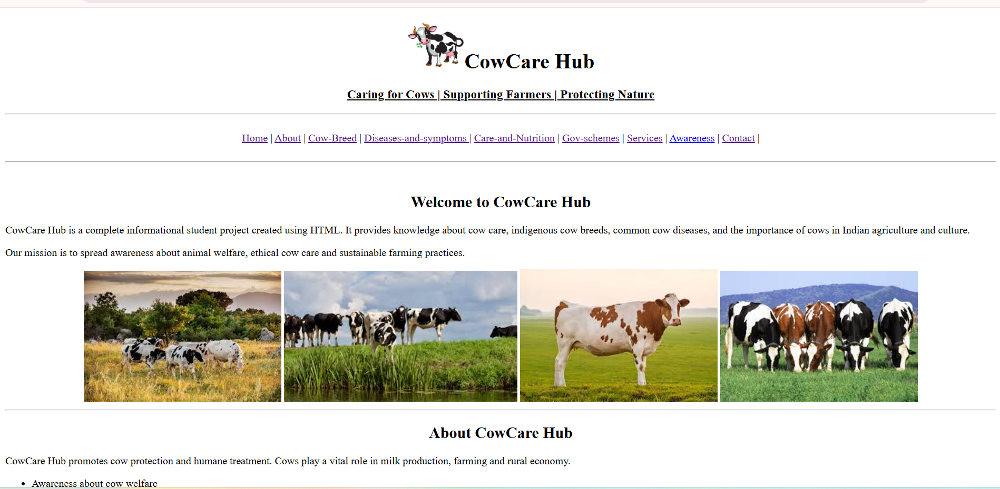
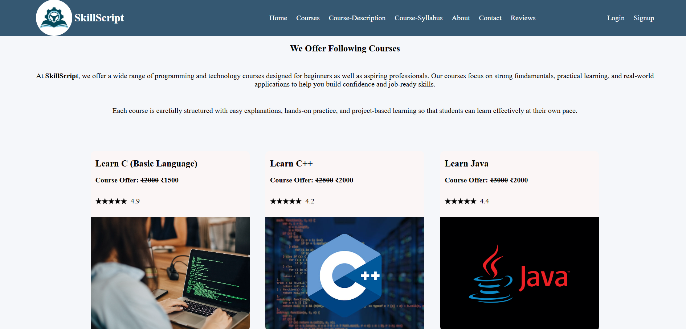
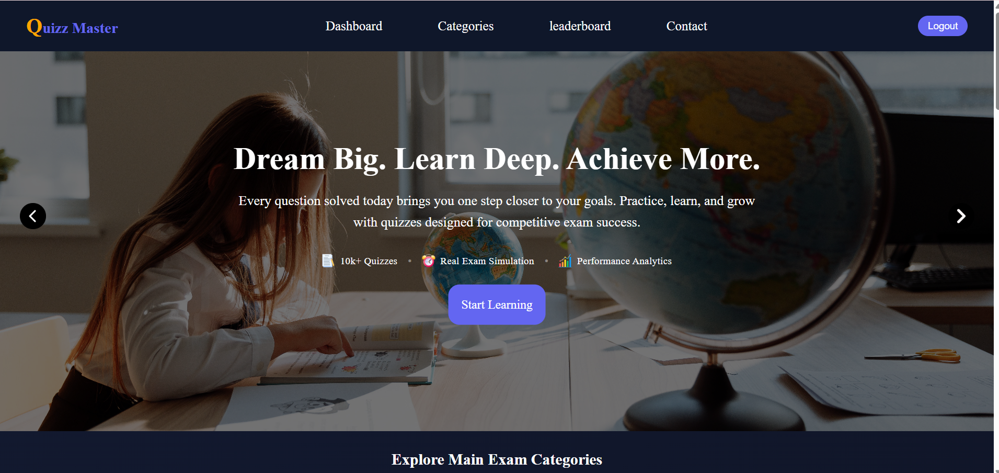
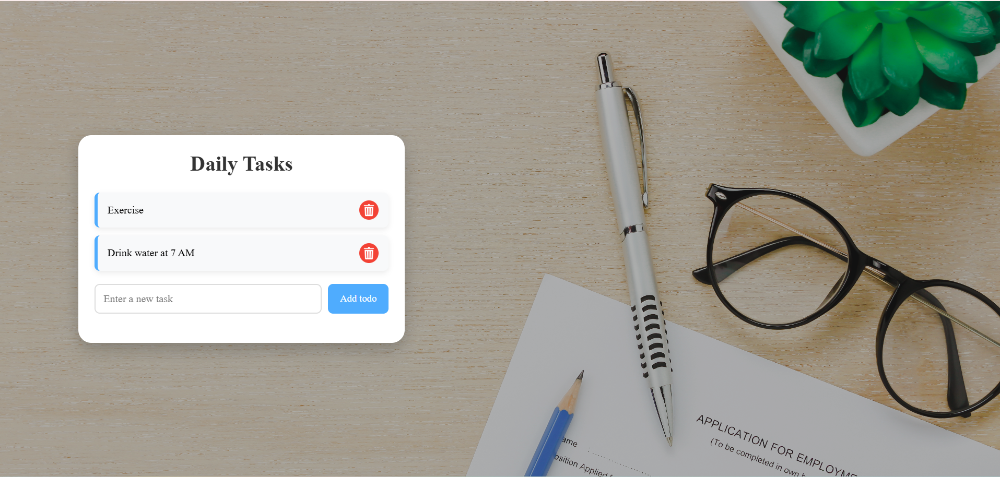
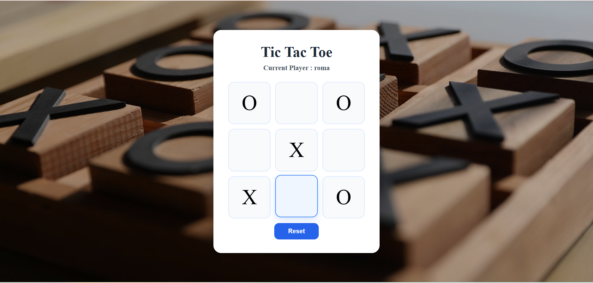
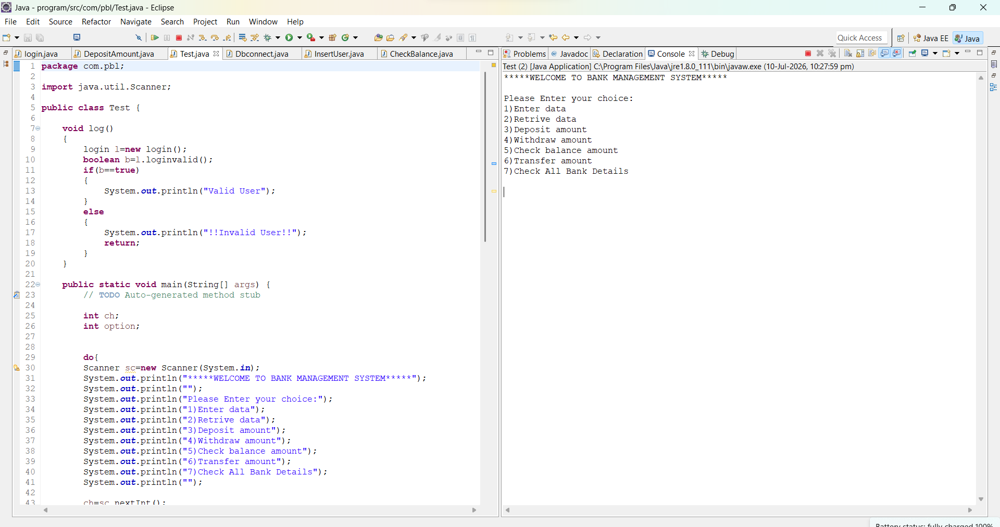
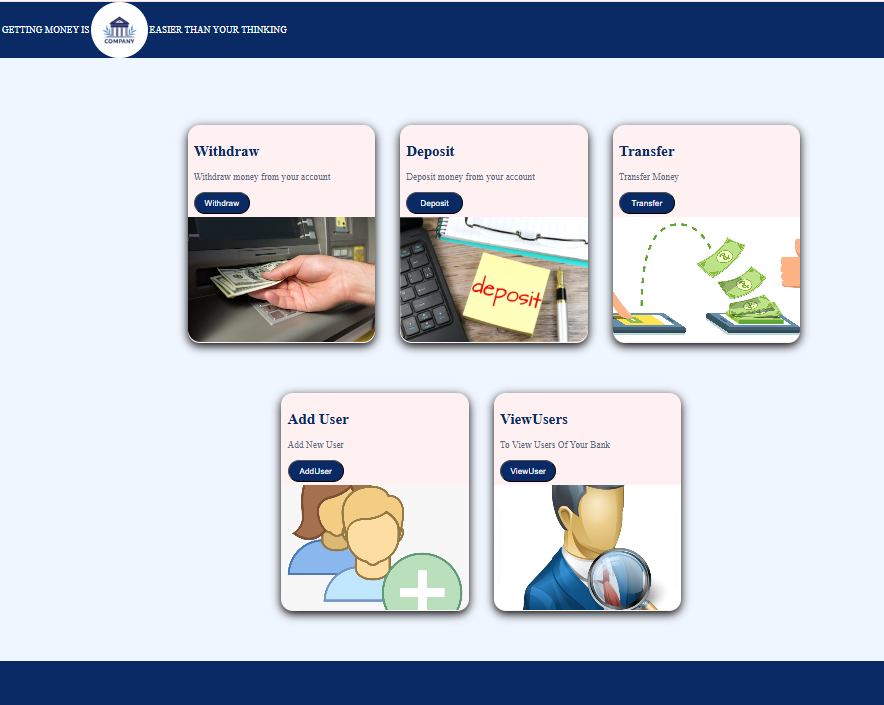
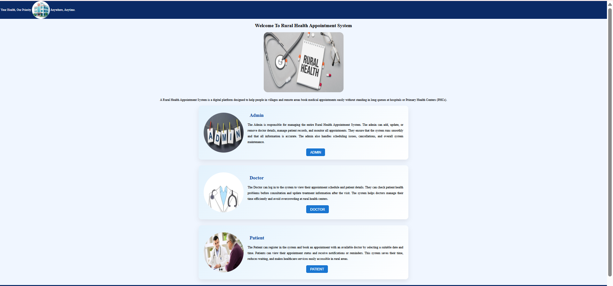
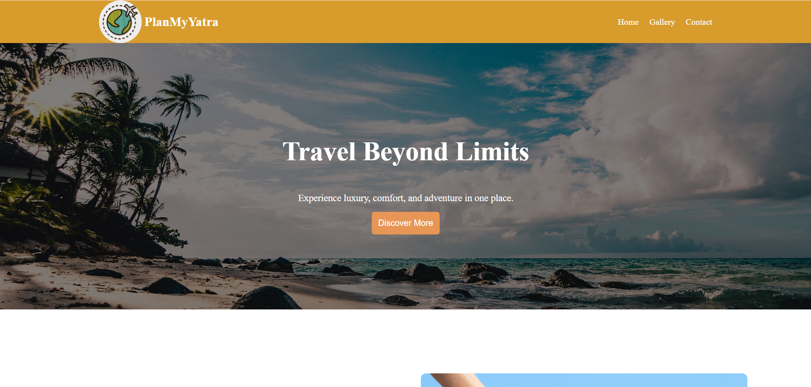

Here are some of my academic and personal projects that demonstrate my skills in web development, Java programming, databases, and UI design.

A modern and fully responsive portfolio website built to showcase my education, skills, projects, certifications, and contact information with a clean and attractive user interface.
A responsive website that provides information about cow care, nutrition, dairy farming, and animal welfare with an attractive interface.


A learning platform developed to improve programming skills through structured tutorials, coding resources, and project-based learning.
An interactive quiz application that generates multiple-choice questions, evaluates answers instantly, and displays the final score.


A task management application that enables users to add, edit, delete, search, and organize daily tasks using Local Storage.
A classic Tic-Tac-Toe game developed using JavaScript with winner detection, reset functionality, and a responsive interface.


A console-based banking application implementing account creation, deposits, withdrawals, balance inquiry, and transaction management.
A web-based banking management system developed using JSP, Servlets, JDBC, and MySQL for managing customers and transactions.


A healthcare management system developed using Advanced Java for managing patients, doctors, appointments, and hospital administration.
A responsive travel planning website that helps users discover popular destinations, explore tourist attractions, plan personalized trips, and organize travel itineraries through a clean, modern, and user-friendly interface.
